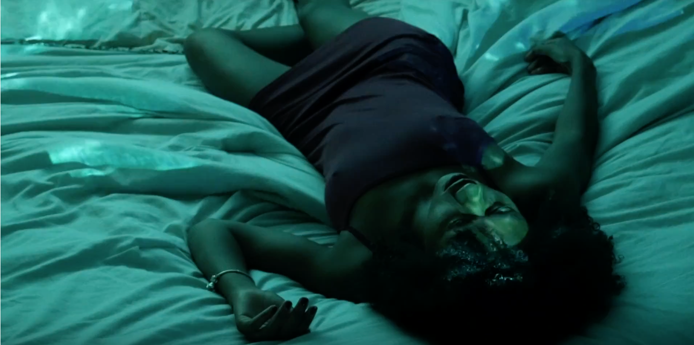

My silent film is entitled "DREAM". It follows a girl through her subconscious mind. I decided to use a projector to display the characters dream over her. This was an experimental approach that brought the visuals of a dream state into a simple room.
Cast and Crew
Actress: Auberth Bercy
Camera Operator: Andy Ramirez
Director: Maribel Cabrera